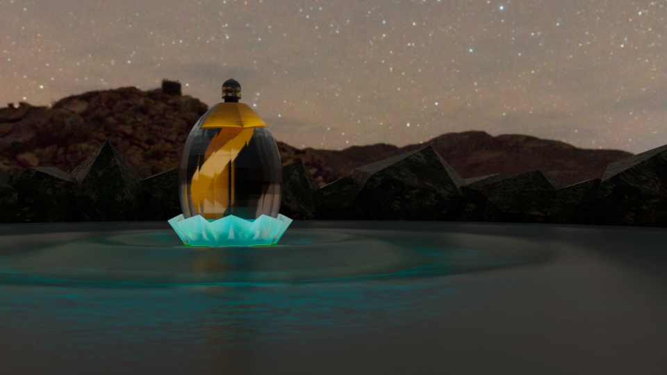
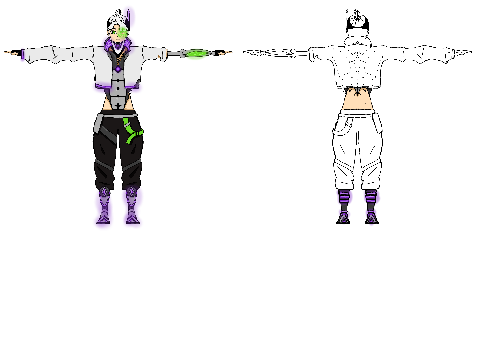

Soy un creador y animador de modelos y entornos y estos son unos de mis trabajos
Proyectos destacados

Creacion y modelado de un entorno para una presentacion de un perfume ficticio

Creacion y modelado de un entorno para una presentacion de un perfume ficticio